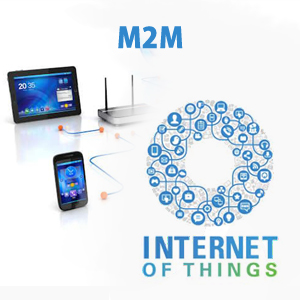

The Customized Global M2M Solution
The Customized Global M2M Solution
 One of the challenges in M2M development and the Internet of Things that John Molise, Vice President of Operations at Aeris Communication, pointed is the lack of visibility and information. He mentioned that most IoT programs are missing key elements such as the traditional network troubleshooting and support. As much as fundamental information such as the location of a remote device, other data like RF conditions, device errors and application performance criteria are equally important in providing valuable input on user experience. Other challenges that he mentioned are variable use of network transport as well as the inability of machines to gracefully select consumer traffic. However, apart from impending issues of security in some of the current machine-to-machine communication devices that power the Internet of Everything, as well as the overwhelming cost of global deployment, apparently there are still some other issues that need to be addressed. These are issues that go beyond technicalities.
Many believe that the M2M market is a huge market. According to Vodafone's latest M2M Adoption Barometer, M2M adoption has increased by more than 80 percent in the past year, and is expected to grow to 10.3 billion devices in 2018 from this year's 4.4 billion. The survey, which was conducted by Circle Research and participated by 600 execs from more than 14 countries, showed that energy and utilities, consumer electronics and automotive are the top three sectors that contributed to the nearly 30 percent adoption rate. However, a lot of things still need to be done to bridge the gaps and understand the market more.
The industry still faces numerous implementation challenges as most M2M solutions are highly fragmented. Solutions are also mostly dedicated to single application which could possibly result in slow development of the global market. The issue on interoperability among devices still stands, despite efforts from industry leaders in creating solutions that address this communication barrier, such as the Hypercat, a new platform of communication between different devices that the UK tech consortium is pushing to become a standard for IoT semantics. According to the consortium, Hypercat will help will fuel the interoperability of devices as data is being stored in the cloud in standardized formats, making it available to more connected devices, further expanding the Internet of Things. But whether it will become a standard, it is yet to be determined and interoperability may still hinder the effectiveness of these M2M solutions.
Some M2M solutions in the market still use the traditional user-pay models. Consumers would not be too eager to pay 20 cents every time an automated pill box with tracking capabilities is opened or dispenses medications. It is of utmost importance to take into account the type of economic model deployed as well, to avoid cost of service delivery. The nature of collecting data as well as monitoring with M2M devices can possibly cause some privacy and security issues. There may be some business risk, as well as regulatory and legal hurdles, especially in different countries. It is therefore important to have a global standardization for M2M and develop a globally agreed end-to-end specifications for M2M focused on service layers that are using common architecture principles.
© 2013 Parlacom, All Rights Reserved


 English
English Portuguese
Portuguese